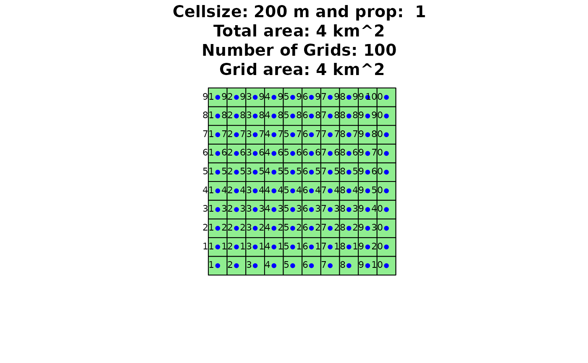
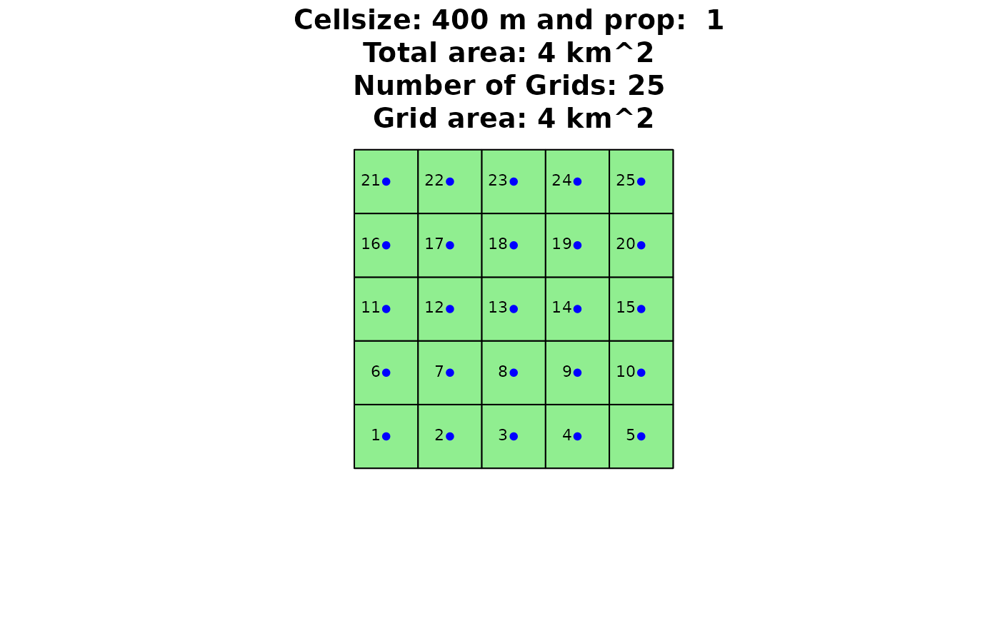
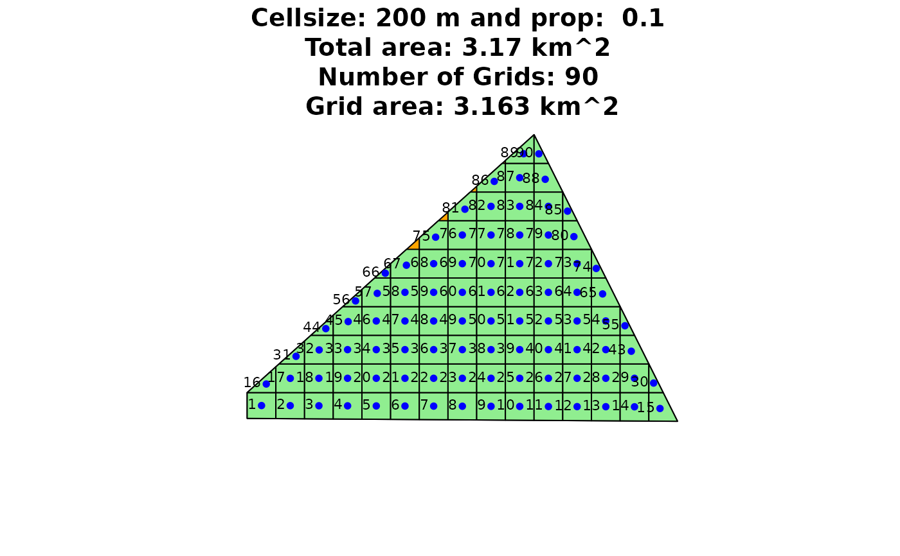

Create a grid from a given polygon with a certain resolution and proportionality. The center points of each grid cell represent possible locations for wind turbines.
grid_area(shape, size = 500, prop = 1, plotGrid = FALSE)
Arguments
| shape | Simple Feature Polygon of the considered area |
|---|---|
| size | The resolution of the grid in meters. Default is 500 |
| prop | A factor used for grid calculation. Determines the percentage a grid has to overlay the considered area to be represented as grid cell. Default is 1. |
| plotGrid | Logical value indicating whether the results should be plotted. Default is FALSE. |
Value
Returns a list with 2 elements. List element 1 will have the grid cell IDS, and the X and Y coordinates of the centers of each grid cell. List element 2 is the grid as Simple Feature Polygons, which is used for plotting purposes.
Note
The grid of the genetic algorithm will have a resolution of Rotor
* fcrR. See the arguments of windfarmGA
See also
Other Helper Functions:
dup_coords(),
getDEM(),
getISO3(),
get_grids(),
hexa_area(),
isSpatial(),
permutations(),
readintegerSel(),
readinteger(),
splitAt(),
windata_format()
Examples
## Exemplary input Polygon with 2km x 2km: library(sf) Polygon1 <- sf::st_as_sf(sf::st_sfc( sf::st_polygon(list(cbind( c(0, 0, 2000, 2000, 0), c(0, 2000, 2000, 0, 0)))), crs = 3035 )) ## Create a Grid grid_area(Polygon1, 120, 1, TRUE)grid_area(Polygon1, 300, 1, TRUE)## Examplary irregular input Polygon Polygon1 <- sf::st_as_sf(sf::st_sfc( sf::st_polygon(list(cbind( c(0, 0, 2000, 3000, 0), c(20, 200, 2000, 0, 20)))), crs = 3035 )) ## Create a Grid grid_area(Polygon1, 200, 1, TRUE)grid_area(Polygon1, 200, 0.5, TRUE)grid_area(Polygon1, 200, 0.1, TRUE)grid_area(Polygon1, 400, 1, TRUE)grid_area(Polygon1, 400, 0.5, TRUE)grid_area(Polygon1, 400, 0.1, TRUE)